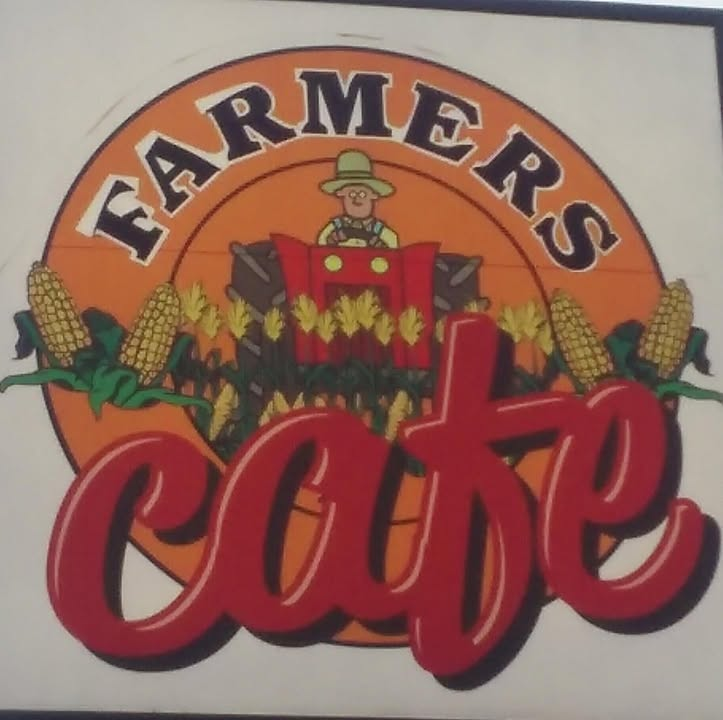

Breakfast all morning
Skillets, scrambles, biscuits and gravy, steak and eggs.
Ask about breakfast all morning →
Farmers CafeAn old-school cafe on W Pacific Ave with hearty breakfasts, a Tex-Mex twist and great coffee, open every day.
Skillets, scrambles, biscuits and gravy, steak and eggs.
Ask about breakfast all morning →Dishes like the enchilada omelette.
Ask about tex-mex favorites →Chicken fried steak and homemade cinnamon rolls.
Ask about lunch & homemade rolls →If you love cafes with an old-school feel and a Tex-Mex twist, this is your place. Excellent coffee, too.
Amazing chicken fried steak and steak and eggs with a homemade cinnamon roll. Very friendly, even to our dog.
929 W Pacific Ave, Lexington, NE 68850
Call nowGet directionsEmail farmers.cafe10@gmail.comFacebook page| Mon–Thu | 6:30 AM–2 PM |
|---|---|
| Fri–Sat | 6:30 AM–2:30 PM |
| Sunday | 6:30 AM–2 PM |